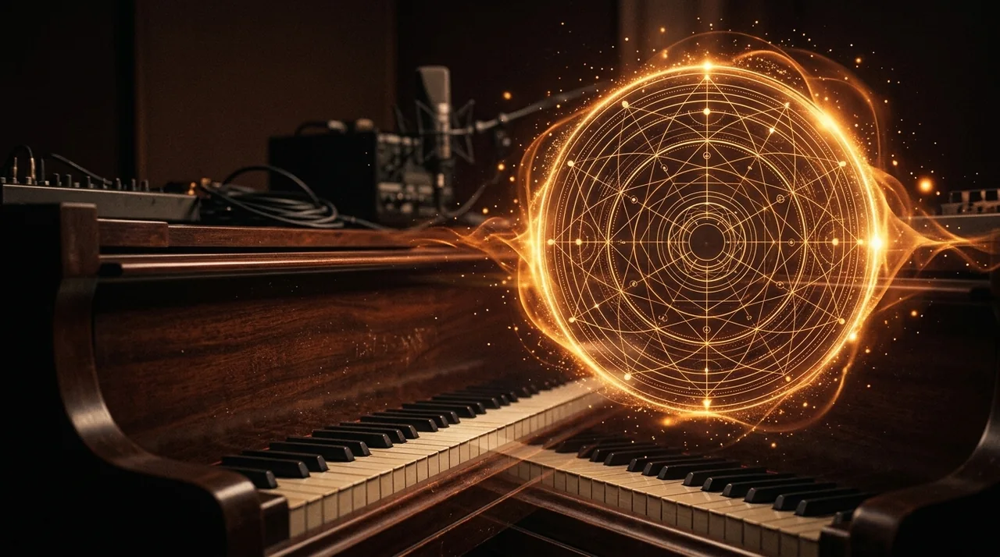

OUÇA · COMPONHA · COMPARE
Laboratório de harmonia

Monte e ouça os sete graus de uma tonalidade. Compare tríades, sétimas e inversões e observe quais notas mudam. Este explorador não corrige harmonizações SATB.
Use fones de ouvido. Os sons começam ao clicar em um botão e param ao sair da página.
Em menor, usa-se a escala menor natural: o quinto grau é menor. Não representa a dominante maior da escala menor harmônica.
Inversão
Uma inversão muda o baixo, conservando as notas do acorde. Na primeira inversão, o baixo é a terça; na segunda, a quinta; na terceira, a sétima.
Em uma tonalidade maior, I–IV–V–I é um percurso harmônico básico. Ouça a tensão de V ao voltar a I. Um acorde de sétima acrescenta mais uma terça à tríade.
Aplicar o que aprendeu
Levar acorde ao estúdio →Entenda as tonalidades e seus acordes
Compare armaduras e relativos menores, ouça tríades diatônicas e baixe uma referência tonal.
Abrir círculo de quintas →Compare como as vozes se movem
Ouça I–IV–V–I (ou i–iv–v–i em menor natural) de duas maneiras. Ambas começam e terminam no mesmo acorde. São usadas tríades, independentemente da opção de sétima acima. Cada acorde dura dois pulsos a 90 BPM e usa o instrumento escolhido.
A alternativa busca o menor movimento total entre as posições fechadas e inversões disponíveis entre Dó3 e Dó6. As vozes grave, média e aguda são ligadas sem cruzamentos. A soma conta semitons absolutos; não mede qualidade musical nem verifica quintas paralelas, duplicações ou regras SATB.
| Versão | Passo / grau | Vozes grave · média · aguda | Inversão · 0 = fundamental | Movimento por voz · semitons |
|---|
Compare os baixos e os sons que permanecem próximos. Qual versão parece mais fluida e em que contexto preferiria a outra? A dominante da escala menor natural continua menor.